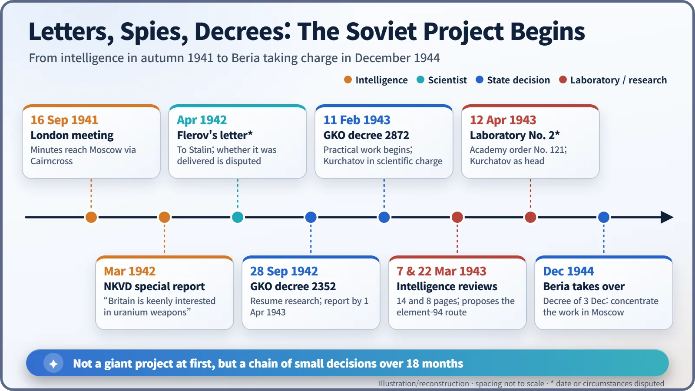
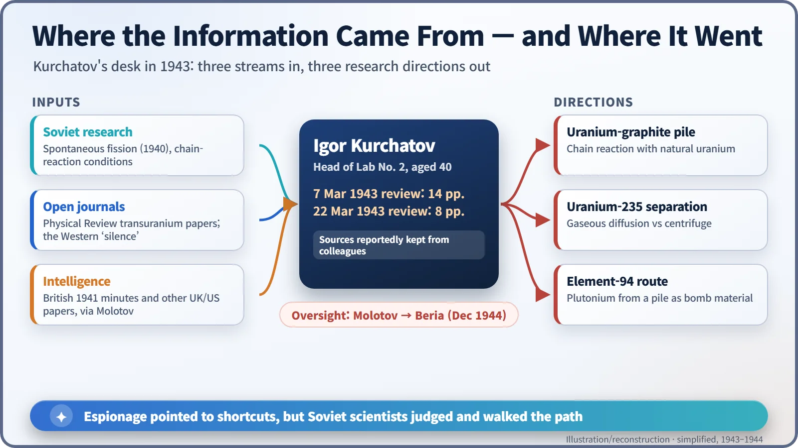
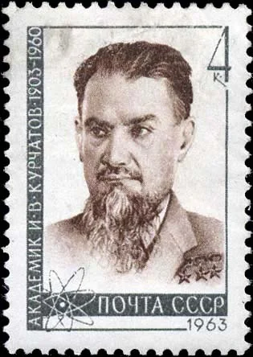
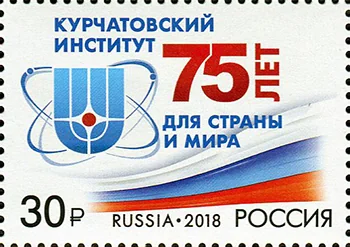

Nuclear History · 097
Between a Spy's Dossier and a Laboratory Bench — Igor Kurchatov and the Start of the Soviet Atomic Project (1942–1944)
In the middle of the war, Moscow restarted uranium research on a small scale, guided by Igor Kurchatov's careful reading of physics and espionage alike.
In 1942, with German armies deep inside the Soviet Union, Moscow quietly restarted uranium research. Prompted by intelligence from London and a young physicist's warning, the State Defence Committee ordered a feasibility study in September 1942, put Igor Kurchatov in scientific charge in February 1943 and created the secret "Laboratory No. 2" that April. Until the end of 1944 it remained a small effort, built on a careful reading of both physics and espionage.
A bet in the middle of a war
Imagine you sit on the Soviet leadership in the spring of 1942. The German army has only just been pushed back from the gates of Moscow. Two kinds of paper land on your desk. One is a secret intelligence report saying that Britain is trying to turn uranium into a weapon. The other is a letter from a young air-force lieutenant insisting that uranium research must restart. With every tank counting, would you bet people and money on the atomic nucleus?
The Soviet Union did place that bet. But it started very small.
Papers from London
Soviet physics was not behind. In 1940 two young physicists had detected the spontaneous fission of uranium in a Moscow metro station, working at night when the trains had stopped. Then, on 22 June 1941, Germany invaded, and uranium research stopped.
The first push to restart came not from scientists but from intelligence. Minutes of a secret British meeting on uranium, held in London on 16 September 1941, reached Moscow through the British civil servant John Cairncross. From the summer of 1941 the German-born physicist Klaus Fuchs was also passing information to the Soviet side from Britain. In March 1942 a special report reached Stalin stating that the British War Cabinet was taking a keen interest in the military use of uranium. [2]
In April 1942 Georgy Flerov (1913–1990), co-discoverer of spontaneous fission, wrote to Stalin. His argument was that the disappearance of fission papers from Western journals was itself a warning. Historians disagree, however, on whether this letter was ever actually delivered to Stalin. [2] [5]
A 39-year-old physicist nicknamed "the Beard"
On 28 September 1942 the State Defence Committee (GKO), the body that ran the Soviet war effort, issued decree No. 2352, "On the organisation of work on uranium". It told the Academy of Sciences to resume research and to report by 1 April 1943 on whether a "uranium bomb or uranium fuel" was possible (quoted in translation from the Russian). In other words, the first order was simply: find out whether it can be done. [2]
The senior physicist Abram Ioffe (1880–1960) was considered first, but he declined on grounds of age and recommended Igor Kurchatov (1903–1960). Kurchatov was a 39-year-old nuclear physicist who had spent the first months of the war protecting warships against German magnetic mines. Around this time he grew a beard, and colleagues began calling him "Boroda", the Beard. According to a story often told, he vowed not to shave until the project succeeded. [6]
GKO decree No. 2872 of 11 February 1943 launched practical work, with Kurchatov in scientific charge and the People's Commissar for Foreign Affairs, Vyacheslav Molotov, in overall political charge. On 12 April 1943 an Academy of Sciences order formally created "Laboratory No. 2 of the USSR Academy of Sciences", a deliberately bland cover name that stayed in use until 1955. Its core was a group of about ten people from the Leningrad Physico-Technical Institute, which had been evacuated to Kazan. [3]

The dossier he read alone
In early 1943 Molotov showed Kurchatov British and American material gathered by Soviet intelligence. On 7 March Kurchatov sent a 14-page handwritten review to Mikhail Pervukhin, the People's Commissar for the Chemical Industry. He valued the material highly but checked it critically, noting, in a published English rendering, that "certain conclusions, even on rather important parts of the work, appear dubious to me." He also pointed out that, because of spontaneous fission, "it is impossible, up to the very moment of explosion, to keep all of the uranium bombing charge in one place." [4]
In a second, 8-page review dated 22 March, Kurchatov drew on transuranium papers published openly in the American journal Physical Review. He proposed that element 94, which would later be named plutonium, could be extracted from a uranium pile and used as bomb material. That route would avoid separating uranium isotopes, the job of sorting uranium-235 from almost identical uranium-238, which demands enormous plants. [4]
Kurchatov is said to have kept the origin of the intelligence from his colleagues, passing on its lessons as research directions of his own. [1]

Small, but steady
Laboratory No. 2 studied three paths at once: a pile of natural uranium and graphite to sustain a chain reaction, separation of uranium-235, and the element-94 route. In 1944 a Leningrad branch was set up and the laboratory's first cyclotron was built in Moscow. The biggest obstacle, though, was that the country had almost no uranium ore. [3] [5]
While the American effort was mobilising tens of thousands of people, the Soviet project worked on a scale of dozens, and many accounts judge that progress under Molotov was slow. On 3 December 1944 the GKO ordered the work to be concentrated in Moscow and new laboratory buildings to be built, and that same month Lavrentiy Beria, head of the NKVD secret police, took over supervision. [3] [5]

Espionage or science?
How much the espionage helped is still debated. Western historians tend to argue that it saved the Soviet programme time and trial and error. Russian accounts tend to stress the home-grown scientific skill needed to read, test and filter the material. What is clear is that Kurchatov did not take the papers on trust; he checked them. [1]
Laboratory No. 2 changed its name several times and is today the National Research Centre "Kurchatov Institute" in Moscow. Some sources give its founding date as 11 February 1943, the day of the GKO decree, but Russia issued the stamp marking the institute's 75th anniversary on 12 April 2018. [3] [7]
